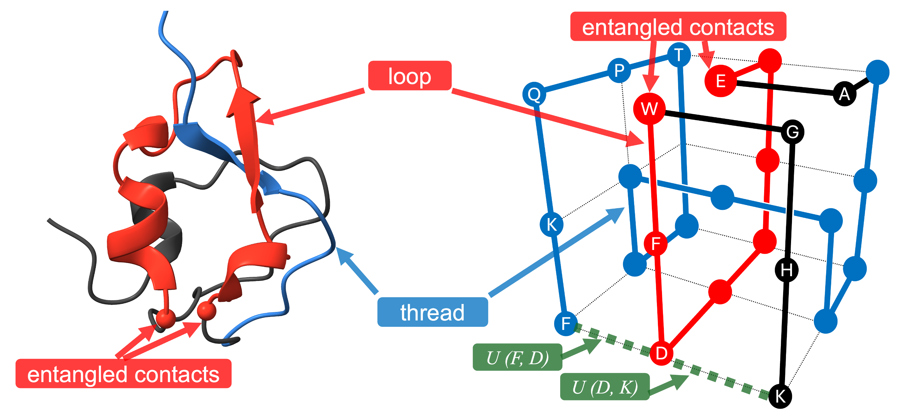
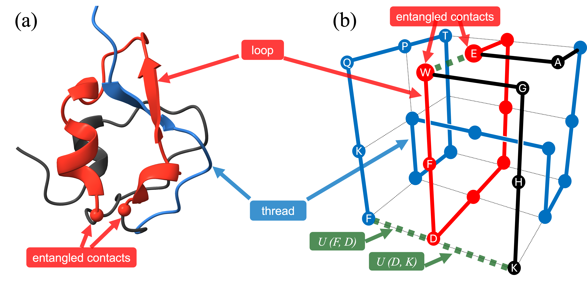

G. Bartolucci, D. M. Busiello, M. Ciarchi, A. Corticelli, I. Di Terlizzi, F. Olmeda, D. Revignas and V. M. Schimmenti, “Phase behavior of Cacio e Pepe sauce.” Physics of Fluids 37, 044122 (2025).
About
I am a postdoctoral researcher in the Biological, Soft-matter & Statistical Physics Group of the University of Padua.
Previously I was a visiting scientist in the Biological Physics Group at the MPI PKS in Dresden.
I did my PhD in the Soft Matter Theory Group of the University of Padua.
Research

Topologically entangled motifs in proteins

Biological Physics
b
Publications
S. Varytimiadou, D. Revignas, F. Giesselmann and A. Ferrarini, “Elasticity of lyotropic nematic liquid crystals: A review of experiments, theory and simulation.” Liquid Crystals Reviews 12, 57–104 (2024).
D. Revignas and A. Ferrarini, “Molecular shape, elastic constants and spontaneous twist in chiral and achiral nematics: Insights from a generalised Maier–Saupe framework.” Liquid Crystals 51, 898–918 (2024).
D. Revignas and A. Ferrarini, “On the elusive saddle–splay and splay–bend elastic constants of nematic liquid crystals.” The Journal of Chemical Physics 159, 034905 (2023).
D. Revignas and A. Ferrarini, “Spontaneous twisting of achiral hard rod nematics.” Physical Review Letters 130, 028102 (2023).
D. Revignas and A. Ferrarini, “Microscopic modelling of nematic elastic constants beyond Straley theory.” Soft Matter 18, 648–661 (2022).
D. Revignas and V. Amendola, “Artificial neural networks applied to colorimetric nanosensors: An undergraduate experience tailorable from gold nanoparticles synthesis to optical spectroscopy and machine learning.” Journal of Chemical Education 99, 2112–2120 (2022).
D. Revignas and A. Ferrarini, “From bend to splay dominated elasticity in nematics.” Crystals 11, 831 (2021).
D. Revignas and A. Ferrarini, “Interplay of particle morphology and director distortions in nematic fluids.” Physical Review Letters 125, 267802 (2020).
See also: ORCID / Scopus / Google Scholar
Contact
Department of Physics and Astronomy Galileo Galilei, University of Padua
Via F. Marzolo, 8 - 35131
Padua, Italy
Email: davide.revignas[at]unipd.it